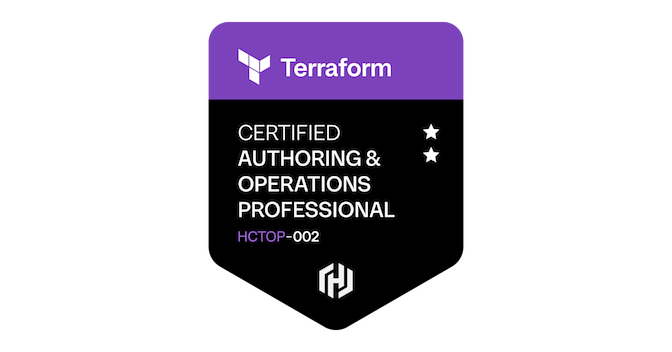

~/certification-vault $ tree --links
Certification Vault
Verified cloud, Kubernetes, and platform engineering credentials, with room to add future badges and learning milestones.
verified recordscloud architectureKubernetes
SECURE ARCHIVE / ONLINETRUST INDEX / 06
/verified-records
Credential nodes
select a record to open its issuer

HashiCorp Certified: Terraform Authoring and Operations ProfessionalIBM Professional Certification · valid Aug 07, 2026 – Aug 07, 2028 Microsoft Certified: Azure Solutions Architect ExpertMicrosoft Learn AWS Certified Solutions Architect – ProfessionalAmazon Web Services
AWS Certified Solutions Architect – ProfessionalAmazon Web Services
 Microsoft Certified: Azure Administrator AssociateMicrosoft Learn
Microsoft Certified: Azure Administrator AssociateMicrosoft Learn
 AWS Certified Developer – AssociateAmazon Web Services
AWS Certified Developer – AssociateAmazon Web Services
 Certified Kubernetes Application DeveloperThe Linux Foundation / CNCF
Certified Kubernetes Application DeveloperThe Linux Foundation / CNCF